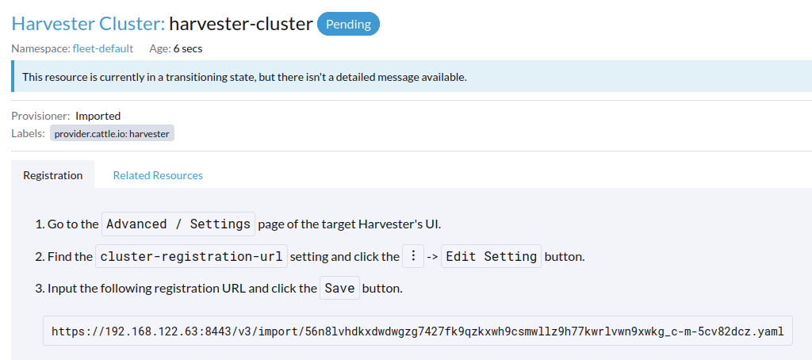
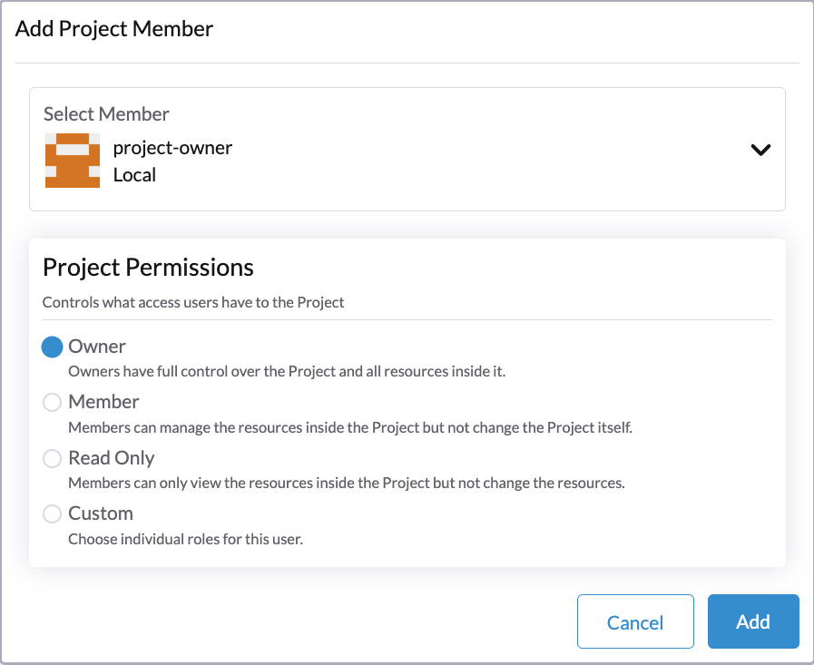

Gestion de la virtualisation
Grâce aux capacités de gestion de la virtualisation de Rancher, vous pouvez importer et gérer plusieurs clusters SUSE Virtualization. Il fournit une solution qui unifie la gestion de la virtualisation et des conteneurs à partir d’une seule interface.
De plus, SUSE Virtualization tire parti des capacités existantes de Rancher, telles que authentification et contrôle RBAC pour la prise en charge du multi-locataire.
Pour des informations sur le déploiement de Rancher et la fourniture de clusters Kubernetes en utilisant divers fournisseurs de cloud, voir Déploiement de SUSE Rancher Prime Server.
Importation du cluster SUSE Virtualization
-
UI
-
API
-
Vérifiez et préparez l’image du conteneur.
Pour faciliter la tâche d’importation, un nouveau pod nommé
cattle-cluster-agent-*sera créé sur le cluster SUSE Virtualization. L’image du conteneur utilisée pour ce pod dépend de la version de votre serveur Rancher (par exemple, l’imagerancher/rancher-agent:v2.7.9est utilisée si vous exécutez Rancher v2.7.9). De plus, cette image dynamique n’est pas intégrée dans l’ISO SUSE Virtualization et est plutôt tirée du dépôt lors de l’importation.Si votre cluster SUSE Virtualization n’est pas directement accessible depuis Internet, effectuez l’une des actions suivantes :
-
Configurez un registre privé pour le cluster et ajoutez l’image : Harvester tirera automatiquement l’image de ce registre.
-
Si vous avez configuré un proxy HTTP pour accéder aux services externes, vérifiez qu’il fonctionne comme prévu. Les serveurs DNS que vous avez spécifiés dans la configuration de Harvester devraient être capables de résoudre le nom de domaine
docker.io. -
Téléchargez l’image en utilisant la commande
docker pull rancher/rancher-agent:v2.7.9 && docker save -o rancher-agent.tar rancher/rancher-agent:v2.7.9. Ensuite, créez une copie de l’image téléchargée dans chaque nœud de cluster, puis importez l’image dans containerd en utilisant la commandesudo -i ctr --namespace k8s.io image import rancher-agent.tar. Enfin, exécutezsudo -i crictl image ls | grep "rancher-agent"sur chaque nœud pour vous assurer que l’image est prête.
-
-
Une fois le serveur Rancher opérationnel, connectez-vous et cliquez sur le menu hamburger puis choisissez l’onglet Gestion de la virtualisation. Sélectionnez Importer existant pour importer le cluster SUSE Virtualization en aval dans le serveur Rancher.

-
Spécifiez le
Cluster Nameet cliquez sur Créer. Vous verrez ensuite le guide d’inscription ; veuillez ouvrir le tableau de bord du SUSE Virtualization cluster cible et suivre le guide en conséquence.
-
Une fois que le nœud agent est prêt, vous devriez pouvoir voir et accéder au cluster SUSE Virtualization importé depuis le serveur Rancher et gérer vos machines virtuelles en conséquence.

Chaque fois que le nœud agent est bloqué, exécutez la commande
kubectl get pod cattle-cluster-agent-* -n cattle-system -oyamlsur le cluster SUSE Virtualization. Si le message suivant s’affiche, vérifiez les informations à l’étape 1, tuez ce pod et un nouveau pod sera créé automatiquement pour redémarrer le processus d’importation.... state: waiting: message: Back-off pulling image "rancher/rancher-agent:v2.7.9" reason: ImagePullBackOff ... -
Depuis l’interface utilisateur SUSE Virtualization, vous pouvez cliquer sur le menu hamburger pour revenir à la page de gestion multi-cluster Rancher.

-
Dans le cluster Kubernetes Rancher, créez une nouvelle ressource
Cluster.Exemple :
apiVersion: provisioning.cattle.io/v1 kind: Cluster metadata: name: harvester-cluster-name namespace: fleet-default labels: provider.cattle.io: harvester annotations: field.cattle.io/description: Human readable cluster description spec: agentEnvVars: [] -
Une fois que le statut de la ressource
Clusterest mis à jour, obtenez l’ID du cluster (format :c-m-foobar) à partir de la propriété.status.clusterName. -
Créez un
ClusterRegistrationTokenen utilisant l’ID du cluster dans l’espace de noms portant le même nom que l’ID du cluster. Vous devez spécifier l’ID du cluster dans le champ.spec.clusterNamedu token.Exemple :
apiVersion: management.cattle.io/v3 kind: ClusterRegistrationToken metadata: name: default-token namespace: c-m-foobar spec: clusterName: c-m-foobar -
Une fois que le statut de
ClusterRegistrationTokenest mis à jour, obtenez la valeur de la propriété.status.manifestUrldu token. -
Dans le cluster SUSE Virtualization, appliquez le correctif du paramètre
cluster-registration-urlet spécifiez l’URL obtenue à partir de la propriété.status.manifestUrldu token d’inscription du cluster dans le champvalue.Exemple :
apiVersion: harvesterhci.io/v1beta1 kind: Setting metadata: name: cluster-registration-url value: https://rancher.example.com/v3/import/abcdefghijkl1234567890-c-m-foobar.yaml
Mises à niveau
Pour mettre à niveau un cluster SUSE Virtualization importé, vous devez mettre à niveau Rancher, l’extension UI Harvester, et SUSE Virtualization dans un ordre spécifique. L’extension UI Harvester est nécessaire pour accéder à l’interface utilisateur SUSE Virtualization dans les versions Rancher v2.10.x et ultérieures.
-
Vérifiez la matrice de support pour déterminer les versions de Rancher et de l’extension UI Harvester qui correspondent au cluster SUSE Virtualization.
-
Mettez à niveau Rancher.
-
Mettez à niveau l’extension UI Harvester.
Pour des informations sur la mise à niveau de l’extension dans un environnement isolé physiquement, voir extension UI Harvester avec intégration Rancher.
-
Mettez à niveau SUSE Virtualization.
Les fonctionnalités dans SUSE Virtualization v1.5.0 et les versions ultérieures sont mises en œuvre dans l’extension UI Harvester. Si vous ne mettez pas à niveau Rancher et l’extension UI Harvester, ces fonctionnalités peuvent ne pas être disponibles.
Multi-locataire
SUSE Virtualization s’appuie sur l’Rancher autorisation RBAC existante afin que les utilisateurs puissent visualiser et gérer un ensemble de ressources en fonction de leurs autorisations de rôle de cluster et de projet.
Au sein de Rancher, chaque personne s’authentifie en tant qu’utilisateur, ce qui est une connexion qui accorde à un utilisateur l’accès à Rancher. Comme mentionné dans Authentification, les utilisateurs peuvent être locaux ou externes.
Une fois que l’utilisateur se connecte à Rancher, son autorisation, également connue sous le nom de droits d’accès, est déterminée par les autorisations globales et les rôles de cluster et de projet.
-
Autorisations globales: Définir l’autorisation des utilisateurs en dehors du cadre de tout cluster particulier.
-
Rôles de cluster et de projet : Définir l’autorisation des utilisateurs à l’intérieur du cluster ou du projet spécifique où les utilisateurs se voient attribuer le rôle.
Les autorisations globales et les rôles de cluster et de projet sont tous deux mis en œuvre sur Kubernetes RBAC. Par conséquent, l’application des autorisations et des rôles est effectuée par Kubernetes.
-
Un propriétaire de cluster a un contrôle total sur le cluster et toutes les ressources à l’intérieur, par exemple, hôtes, machines virtuelles, volumes, images, réseaux, sauvegardes et paramètres.
-
Un utilisateur de projet peut être affecté à un projet spécifique avec la permission de gérer les ressources à l’intérieur du projet.
|
Il est fortement recommandé de gérer l’accès des utilisateurs en utilisant les modèles de rôle intégrés et le RBAC à portée de projet. SUSE Virtualization met en œuvre son propre modèle RBAC au-dessus de Kubernetes et KubeVirt, s’intégrant avec des projets de style Rancher et une logique multi-locataire. Lors des mises à niveau ou de la reconfiguration, les |
Exemple de multi-locataire
L’exemple suivant fournit une bonne explication de la façon dont la fonctionnalité multi-locataire fonctionne :
-
Tout d’abord, ajoutez de nouveaux utilisateurs via la page Rancher
Users & Authentication. Ensuite, cliquez surCreatepour ajouter deux nouveaux utilisateurs séparés, tels queproject-owneretproject-readonlyrespectivement.-
Un
project-ownerest un utilisateur ayant la permission de gérer une liste de ressources d’un projet particulier, par exemple, le projet par défaut. -
Un
project-readonlyest un utilisateur ayant une permission en lecture seule d’un projet particulier, par exemple, le projet par défaut.
-
-
Cliquez sur l’un des clusters SUSE Virtualization importés après avoir navigué vers l’interface utilisateur SUSE Virtualization.
-
Cliquez sur l’onglet
Projects/Namespaces. -
Sélectionnez un projet tel que
defaultet cliquez sur le menuEdit Configpour attribuer les utilisateurs à ce projet avec les permissions appropriées. Par exemple, l’utilisateurproject-ownerse verra attribuer le rôle de propriétaire du projet.
-
-
Continuez à ajouter l’utilisateur
project-readonlyau même projet avec des permissions en lecture seule et cliquez sur Enregistrer.
-
Ouvrez un navigateur incognito et connectez-vous en tant que
project-owner. -
Après vous être connecté en tant qu’utilisateur
project-owner, cliquez sur l’onglet Gestion de la virtualisation. Là, vous devriez pouvoir voir le cluster et le projet auxquels vous avez été assigné. -
Cliquez sur l’onglet Images pour voir une liste des images précédemment téléchargées dans l’espace de noms
harvester-public. Vous pouvez également télécharger votre propre image si nécessaire. -
Créez une machine virtuelle avec l’une des images que vous avez téléchargées.
-
Connectez-vous avec un autre utilisateur, par exemple,
project-readonly, et cet utilisateur n’aura que la permission de lecture du projet assigné.
|
L’espace de noms |
Supprimer le cluster importé SUSE Virtualization
Les utilisateurs peuvent supprimer le cluster importé SUSE Virtualization depuis l’écran de gestion de la virtualisation de l’interface utilisateur Rancher. Sélectionnez le cluster que vous souhaitez supprimer et cliquez sur le bouton Supprimer pour supprimer le cluster importé SUSE Virtualization.
Vous devrez également réinitialiser le paramètre cluster-registration-url sur le cluster SUSE Virtualization associé pour nettoyer l’agent de cluster Rancher.

|
Veuillez ne pas exécuter la commande |